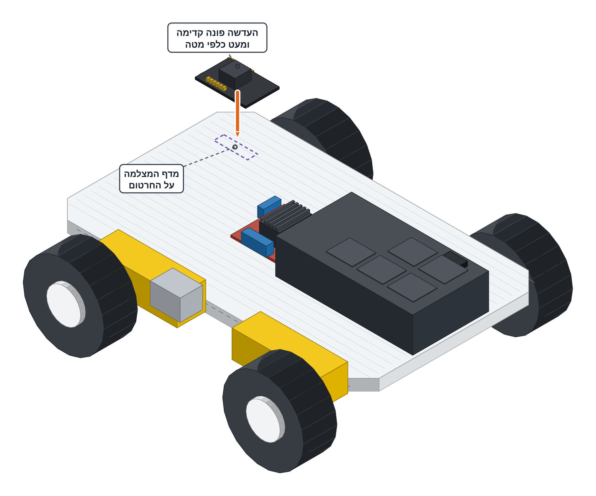

הסייר מקבל גוף — המצלמה עולה על המדף הקדמי.
מכבים את מתג הסוללות לפני שנוגעים בחוטים.

מכבים את מתג הסוללות של המכונית.
מנתקים מה-ESP32 של פרויקט 5 את ששת הג'אמפרים של בקר המנועים, מקלפים אותו מהסקוץ' ומחזירים אותו לקופסת הפרויקט. (מוח שלישי באותה מכונית!)
מנתקים מה-ESP32-CAM את ארבעת חוטי המתכנת (ה-FTDI). (המתכנת סיים את העבודה בינתיים — הוא חוזר בכל פעם שמשנים קוד.)
מצמידים את ה-ESP32-CAM למדף המצלמה המסומן בקדמת השלדה — סקוץ' או אזיקון דרך החריץ שבמדף. העדשה פונה קדימה וקצת למעלה.
FRONT — lens forward, a bit up ┌─────────────────────────┐ │ [ ESP32-CAM ] │ ← camera perch │ │ │ ( velcro — empty ) │ ← ESP32 back in the box │ [ L298N ] [ BATT ] │ └─────────────────────────┘ BACK
עוד לא מחברים שום חוט למצלמה — החיווט מגיע בשני הכרטיסים הבאים.
ה-ESP32-CAM הוא גם המוח וגם המצלמה — לוח אחד. לכן הוא יושב מקדימה, במקום שממנו העדשה רואה את הדרך. חיישני הקו נשארים מנותקים גם בפרויקט הזה.
המצלמה יושבת בקדמת המכונית והעדשה מביטה קדימה. שום חוט עוד לא מחובר.